|
春节是什么 春节（Spring Festival），即中国农历新年，俗称新春、新岁、岁旦等，口头上又称过年、过大年。春节历史悠久，由上古时代岁首祈岁祭祀演变而来。万物本乎天、人本乎祖，祈岁祭祀、敬天法祖，报本反始也。春节的起源蕴含着深邃的文化内涵，在传承发展中承载了丰厚的历史文化底蕴。在春节期间，全国各地均有举行各种庆贺新春活动，带有浓郁的各地地方特色。这些活动以除旧布新、驱邪攘灾、拜神祭祖、纳福祈年为主要内容，形式丰富多彩，凝聚着中华传统文化精华。 春节是集拜神祭祖、祈福辟邪、亲朋团圆、欢庆娱乐和饮食为一体的民俗大节。 百节年为首，春节是中华民族最隆重的传统佳节。受到中华文化的影响，世界上一些国家和地区也有庆贺新春的习俗。据不完全统计，已有近20个国家和地区把中国春节定为整体或者所辖部分城市的法定节假日。春节与清明节、端午节、中秋节并称为中国四大传统节日。春节民俗经国务院批准列入第一批国家级非物质文化遗产名录。 春节的起源 古老传统节日的起源与上古原始信仰、祭祀文化以及星象、历法等人文与自然文化内容有关。据现代人类学、考古学的研究成果，人类最原始的两种信仰：一是天地信仰，二是祖先信仰。古老传统节日多数形成于古人择日祭祀，以谢天地神灵、祖先恩德，以及祈福辟邪的活动。早期的节日文化，反映的是古人自然崇拜、天人合一、慎终追远、固本思源的人文精神；一系列的祭祀活动，则蕴含着祗敬感德、礼乐文明深邃文化内涵。岁节（年节）的起源与发展涵盖了人文哲学与自然规律等方面内容。
|
|
在早期观象授时时代，“斗柄回寅”为春正（岁首），立春乃万物起始、一切更生之义也，意味着新的一岁已开启。“岁”的概念，来自上古历法，“岁”即“摄提”（原始干支），又名为“岁星”、“太岁”。在传承发展中后世将这套多音节的摄提纪元（岁）术语简化为一个字，其与简化后的干支在《尔雅》与《史记》均有对照关系的记载。如：太岁在寅曰摄提格，在卯曰单阏，…在子曰困敦，在丑曰赤奋若（语出《尔雅·释天》）。干支（岁）纪元以北斗星的斗柄指向正东偏北方位的“建寅”之月为起始，然后顺时针方向旋转，循环往复。在传统文化中，干支与方位以及八卦等是联系在一起的，寅位是后天八卦的艮位，是岁终岁首交结的方位，代表终而又始，如《易·说卦传》曰：“艮，东北之卦也，万物之所成终而所成始也。”十二月运行，周而复始，岁末十二月指丑方，正月又复还寅位。斗柄回寅，春回大地，终而复始，万象更新，新岁由此开始。
|
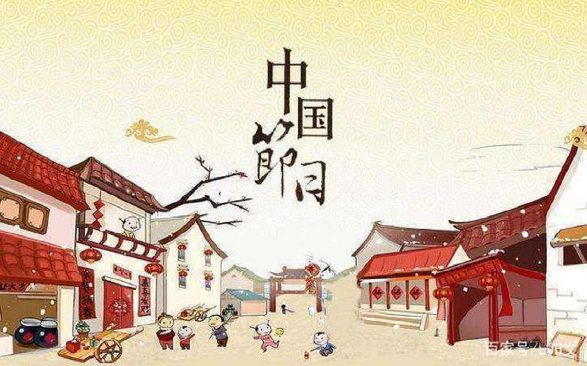 |
在传统的农耕社会，立春岁首具有重要的意义，衍生了大量与之相关的岁首节俗文化。虽然此后由于在历史发展中阴阳合历历法制度的推广，节令与节日发生了分离，但许多节令民俗仍旧保留了下来。春节是由岁首祈岁祭祀演变而来，上古时代人们在春回大地、终而复始、万象更新的岁首，举行祭祀活动报祭天地众神、祖先的恩德，驱邪攘灾、祈岁纳福。古代的祭仪情形虽渺茫难晓，但还是可以从后世的节仪中寻找到一些古俗遗迹。如岭南部分地区沿承有在新年初一拜岁以及新年期间隆重盛大的拜神祭祖、驱邪纳福节仪活动，由此可见上古时代岁首祭祀的蛛丝马迹。春节的起源和发展是一个逐渐形成，潜移默化地完善与普及的过程。春节文化作为中华传统文化的重要组成部分，承载着博大精深的中华文化底蕴，也记录着古代人们丰富多彩的社会生活文化内容。 返回顶部 |
|
|
传统节日仪式与习俗活动，是节日元素的重要内容，承载着丰富多彩的节日文化底蕴。岁节`（年节）是中国一个古老的节日，也是全年最重要的一个节日，在历史发展中，杂糅了多地多种民俗为一体，形成了一些较为固定的风俗习惯，有许多还相传至今。这些活动，可大体归纳为如下几个方面：奉祀神灵，以应天时；崇宗敬祖，维护亲情；驱邪祛恶，以求平安；休闲娱乐，放松心情。百节年为首，春节是中华民族最隆重的传统佳节，它不仅集中体现了中华民族的思想信仰、理想愿望、生活娱乐和文化心理，而且还是祈福攘灾、饮食和娱乐活动的狂欢式展示。 |
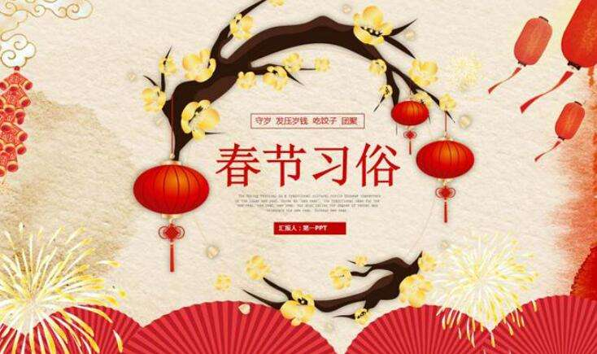 |
|
在春节期间，全国各地均有举行各种贺岁活动，各地因地域文化不同而又存在着习俗内容或细节上的差异，带有浓郁的各地域特色。春节期间的庆祝活动极为丰富多样，有舞狮、飘色、舞龙、游神、庙会、逛花街、赏花灯、游锣鼓、游标旗、烧烟花、祈福、掼春，也有踩高跷、跑旱船、扭秧歌等等。春节期间贴年红、守岁、吃团年饭、拜年等各地皆有之，但因风土人情的不同，细微处又各有其特色。春节民俗形式多样、内容丰富，是中华民族的生活文化精粹的集中展示。 |
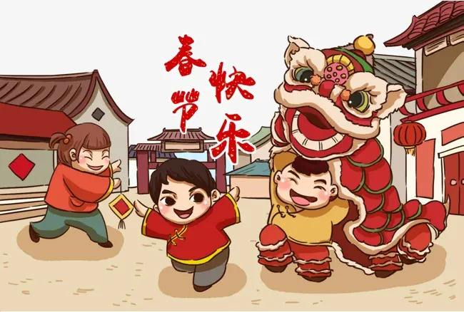 |
春节是除旧布新的日子，春节虽定在农历正月初一，但春节的活动却并不止于正月初一这天。从年尾小年起，人们便开始“忙年”：祭灶、扫尘、购置年货、贴年红、洗头沐浴、张灯结彩等等，所有这些活动，有一个共同的主题，即“辞旧迎新”。春节是个欢乐祥和、合家团圆的节日，也是人们抒发对幸福和自由向往的狂欢节和永远的精神支柱。春节也是敦亲祀祖、祭祝祈年的日子。祭祀是一种信仰活动，是人类在远古生存活动而创造出来的期望与天地自然和谐共生的信仰活动。 |
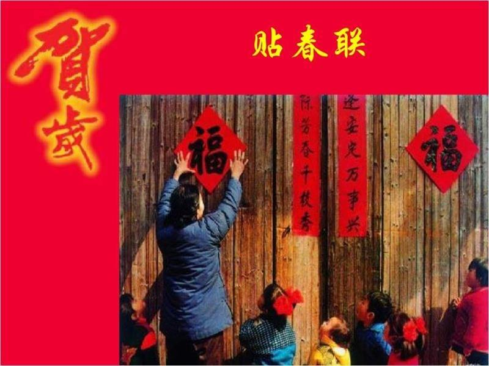 |
| 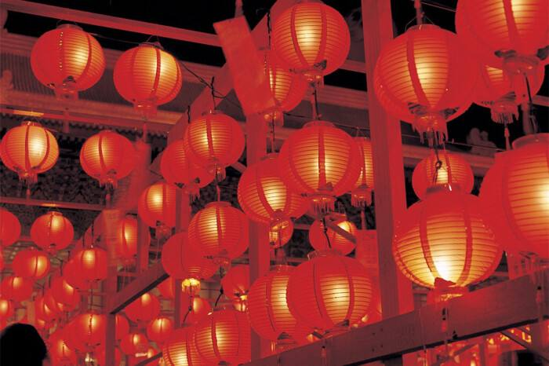 | 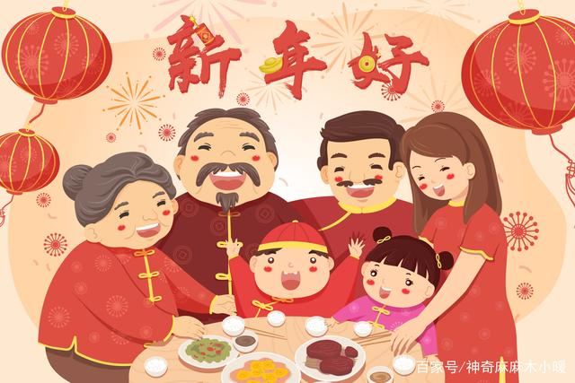 返回顶部 |
春节是中国最重要和最具文化内涵的节日，更是推动产业经济和内需消费的重要内驱力。随着国民经济的快速增长，居民个人可支配收入不断提高，春节消费也由传统的置办年货发展为具有时代特色的贺岁作品、产品工艺、休闲娱乐等节日产品和服务。春节期间，人群、金融、物资、信息、艺术的大规模流动，带动了文化、商业、交通、旅游、电信、金融、餐饮各行各业全面繁荣，形成了独特的“春节经济”。
春节期间的运输，简称为“春运”。是中国特有的一种运输期间。以春节为界，节前15天，节后25天，共40天，由国家经贸委统一发布（每年起止时间略有不同），铁道部、交通部、民航总局按此进行专门运输安排的全国性交通运输高峰叫做春运。在40天左右的时间里，将有20多亿人次的人口流动，占世界人口的1/3。中国春运入选出中国世界纪录协会世界最大的周期性运输高峰。
| 春运线路： | 春节前重点地区通常是京津、长三角、福建、珠三角地区。
节后重点地区一般是成都、重庆、武汉、长沙、南昌、合肥、阜阳地区。 |
| 春运战略： | 为实现“确保安全、满足重点、平稳有序、良好服务”的春运目标，全国铁路春运总体战略是“以客为主，客货双赢；南客北货，南车北调；统筹安排，重点必保；适度屯车，应急有备；车辆挖潜，停短保长；有流开车，无流停运”。 |
| 设立春运原因： | 设立春运的原因是中国人口众多，而春节又是传统的团圆节日，人们纷纷回家过年，要坐车的人太多，运输部门需要全力保证旅客有车坐，能回家，过完节能回来。 |
过年北方民间少不了吃饺子，把肉、鸡蛋、香菇、白菜等混合做成馅，也可用糖、花生、枣、栗子等做成甜馅包成饺子。因为饺子的形状与元宝相似，过年时吃饺子有“财运亨通”的美好寓意。饺子最早的出现可以追溯到三国，并且从唐代开始成形为与现在近似。现在过年与家人一边包饺子、一边看春晚已经成为了不少家庭的必备节目。 |
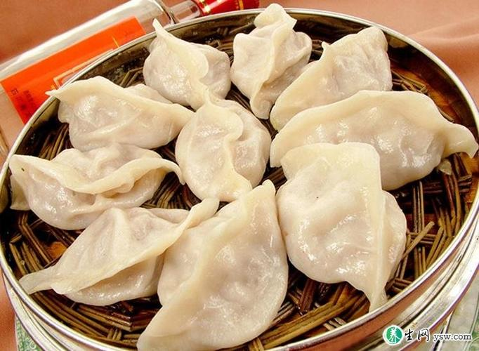 |
2、 年糕
南北方都有吃年糕的习惯，用糯米粉与粘米粉混合做成，或者将米磨粉制糕。根据饮食喜好可以做出不同的菜式，蒸、炒、汤煮、油炸都适宜。过年吃年糕寓意“年年高”，祝愿今年胜旧年。年糕中比较有代表性的有北方的白糕、江浙水磨年糕、塞北黄米糕等。 |
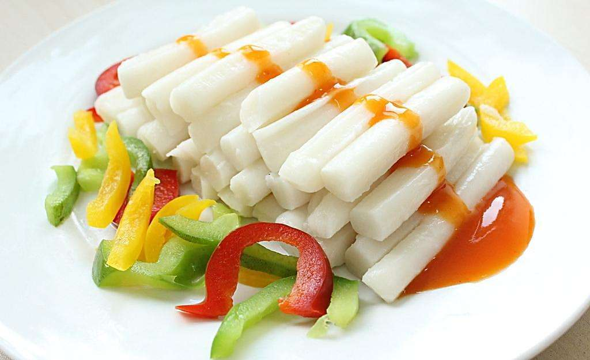 |
3、 糍粑
| 糍粑在南方很多地区流行，特别是福建武夷山一带，家家户户都在过年前一起打糍粑。用糯米作为主料，浸泡后蒸熟，放到特定的石舀里，用木棍反复捶打使其绵软。做好以后的糍粑可以放在芝麻粉或者是糖上滚一圈，香甜可口，是小孩和喜甜人士的最好零食之一。 | 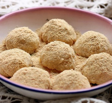 |
4、 元宵
元宵，在南方也叫汤圆，用馅做法丰富，用糯米团根据口味喜好包裹豆沙、芝麻、栗子、枣泥甚至是肉馅等等，放到热锅里开水煮熟即可。因为元宵呈现圆形形状，春节吃元宵包含着人们“团团圆圆”的美好愿望。 |
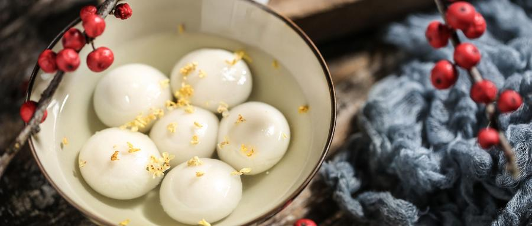 |
5、 煎堆
煎堆，也叫麻团、麻圆。广东过年有吃煎堆的传统食俗，俗话为“煎堆辘辘，金银满屋”。用糯米粉团包上豆沙馅，外面粘上白芝麻，放油锅油炸臌胀，有些地方更有越膨胀越“发”的说法，寓意为“发财”。煎堆是广东地区家家户户春节必不可少的贺年油炸食品。 |
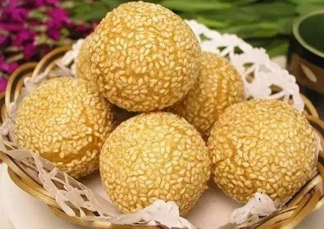 |
6、 春饼
春饼用面粉烙制成薄饼，包上一些蔬菜一起进食，有喜迎春季、祝愿丰收的寓意。北京人习惯在每年的立春吃春饼，称为“咬春”。现在春饼的做法已经越来越多样化和丰富，除了蔬菜以外，还可以根据自己的爱好，加入肉丝、酱料制作成丰富的卷饼。 |
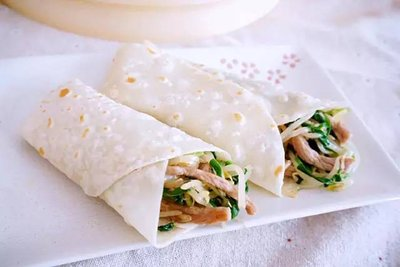 |
7、 灶糖
在腊月二十三这一天，河南等北方地区流行吃灶糖。灶糖用麦芽糖和芝麻做成，在祭灶王的时候用以供奉，意为用糖粘着灶王爷的嘴，让其在玉皇大帝跟前不多说自家坏话，而是多说好话，祝愿新的一年年家里一切顺利。 |
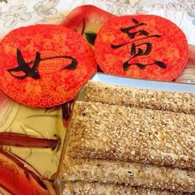 |
春节健康饮食提醒
春节美食虽然丰富又好吃，但也不能贪吃，不然一不小心就会增加疾病风险哦。康康提醒春节享用美食的同时，还有五大原则你必须谨记:
忌油腻：春节期间油炸、高甜度、淀粉等食物较多，容易引起肥胖、上火、小孩蛀牙、老人有三高疾病风险，因此家里老小都要控制此类食物进食，不能过度。
多吃蔬菜水果：春节期间美食、大餐不断，多吃蔬菜水果，可以保持营养均衡。
多喝水：春节期间天气寒冷干燥，空调房、暖气房内更容易干燥，多喝水可以维持体内充分。
七分饱、少吃多餐：三餐、零食坚持“七分饱”的原则，少吃多餐不仅促进消化系统更好运作，更能控制体重。
不要忘记运动：在尝遍春节美食的最后，同时迈开腿运动，保持一个健康的身体状态，为年后开展新的一年工作而做最好准备！返回顶部